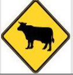
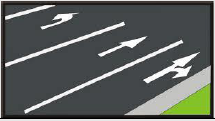

1. ¿Qué indica esta posición del agente?
2. ¿Qué indica esta posición del agente?
3. ¿Qué indica esta posición del agente?
4. ¿En qué lugares tengo permitido circular a esta velocidad?
5. ¿En cuáles de estos lugares se establece esta prohibición?
6. ¿En cuáles de estos lugares se establece la prohibición de
estacionar?
7. ¿Qué tipo de señal es la se muestra?
8. ¿Cuál es el significado correcto de esta señal?
9. ¿Qué debe hacer el conductor ante la presencia de esta señal?

10. ¿Qué indica esta señal ensamblada junto al alto?
11. ¿Según la imagen, este conductor que indica?
12. ¿Según la imagen, este conductor que indica?
13. Esta señal que se muestra, indica:
14. Esta señal preventiva que se muestra, indica:
15. ¿cómo se define esta señal que se muestra?
16. ¿Qué indica esta señal reglamentaria?
17. Esta señal que se le muestra, indica:
18. ¿Qué tipo de vehículo representa la imagen?
19. Esta señal reglamentaria que se le muestra, indica:
20. Esta señal que se le muestra, indica:
21. ¿Qué indica esta señal que le muestra?
22. ¿Qué maniobra permite esta señal que se muestra?
23. ¿Qué significado representa esta señal?
24. ¿Qué significan estas líneas que se muestran?
25. Esta señal que se muestra, indica:
26. Esta señal que se muestra, indica:
27. Esta señal que se muestra, indica:
28. Esta señal que se muestra, indica:
29. Estas señales que se muestran, indican:

30. ¿Qué indican las flechas direccionales?
31. ¿Qué indica este señal preventiva?
32. Que indican estas marcas horizontales, que se muestran:
33. ¿Qué indica para los conductores la señal de tránsito que a continuación se presenta en la figura?
34. Que indica para los conductores la señal de tránsito que a continuación se presenta en la figura.
35. ¿Qué indica para Ud. la señal de tránsito que a continuación se presenta en la figura?
36. ¿Qué mensaje es el de la señal de tránsito preventiva que a continuación se presenta en la figura?
37. ¿Qué debo entender ante esta señal vertical?
38 ¿Que indica para los conductores la señal de tránsito que a continuación se presenta en la figura?
39. ¿Cuál de la maniobra es la correcta al observar la señal?
40. ¿Cuál es la función de la señal vertical que a continuación se presenta en la figura?
41. ¿En qué lugar debo parar según la gráfica que se muestra?
42. Cuál de estas señales de tránsito tiene por objeto advertir a los usuarios trabajo en la vía.
43 ¿Cuál de estas señales, tiene por objeto notificar a conductores, las limitaciones y restricciones?
44 ¿Cuáles de las siguientes señales es informativa?
45. Seleccione cuál de las señales de tránsito advierte antes de un cruce en T.
46. ¿En cuál de las siguientes figuras puedo adelantar con precaución y tomando en cuenta las técnicas para un aventajamiento seguro?
47. ¿Seleccione cuál de las señales de tránsito, marcada en la vía señala un paso peatonal?
48 ¿En cuáles de las siguientes figuras no puedo adelantar en ninguno de los dos sentidos?
49. ¿Cuál es la diferencia entre la línea amarilla discontinua y línea blanca discontinua?
50 La línea continua de color blanco, me indica que:
51. El “alto” es una señal que se clasifica como:
52. El semáforo es una señal que se clasifica como:
53¿Qué es Regulación a brazos?
54¿Qué se entiende por señales informativas?
55 ¿Cuáles son las Señales verticales?
56 ¿Cuáles son las señales horizontales?
57. En una rotonda de tres carriles de entrada, usted circula en el carril del centro, ¿Cuál de las siguientes maniobras es permitida?
58. En una rotonda de tres carriles de entrada, usted circula en el carril izquierdo, ¿Cuál de las siguientes maniobras es permitida?
59. ¿El semáforo amarillo intermitente permanente, que indica al conductor?
60. ¿Cuál es la función de las señales preventivas?